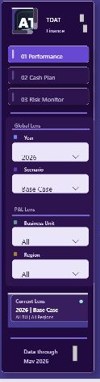
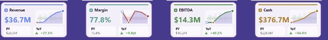
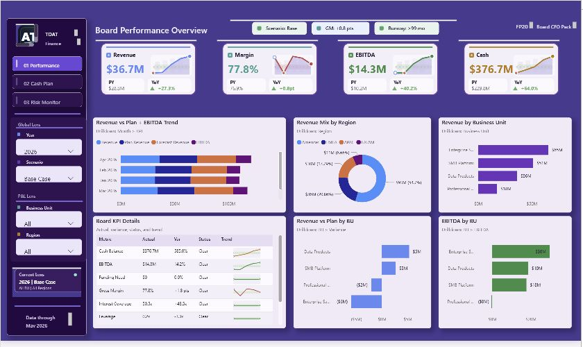

Project 20 v68 PBIX render QA
Evidence source: Power BI Desktop render of output/dashboard_final.pbix. Crops check signature, slicer/lens fit, KPI row, and dashboard overview.
Signature + slicers + Current Lens

KPI cards expanded

Dashboard overview
